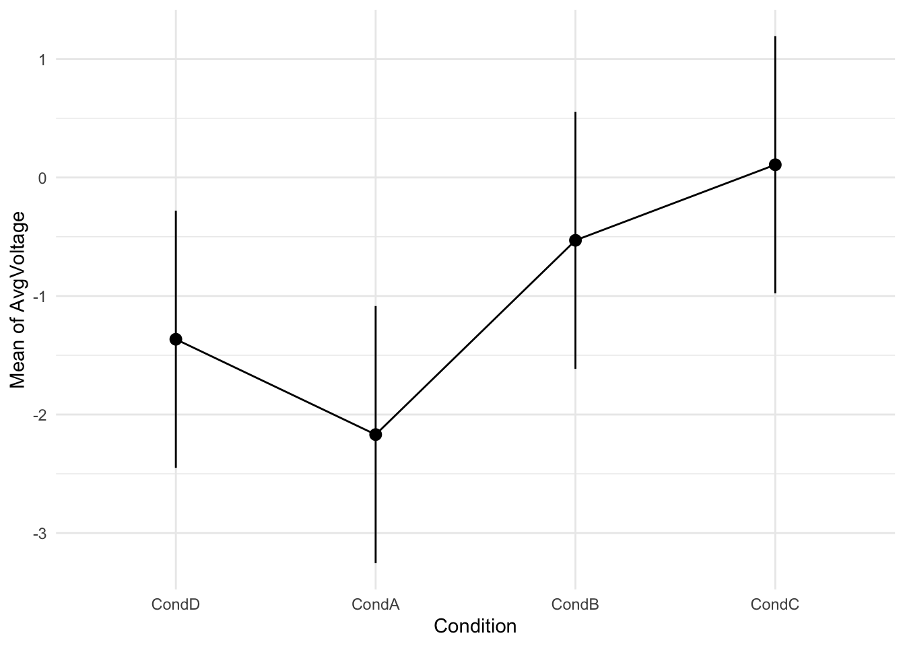
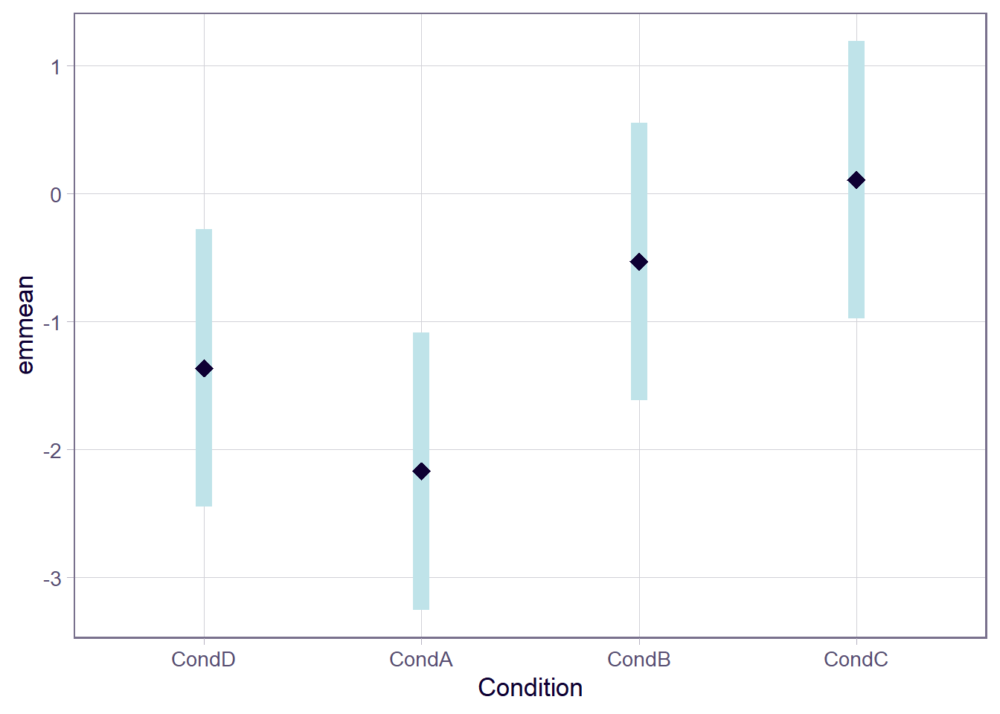
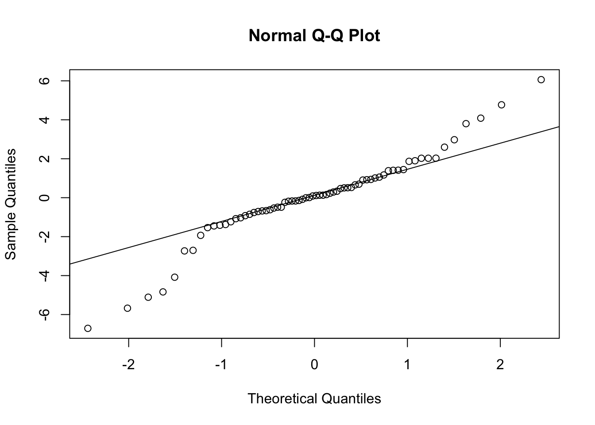
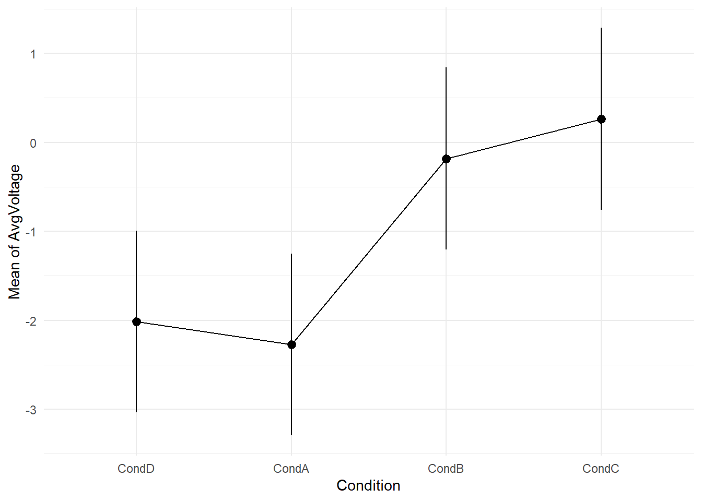
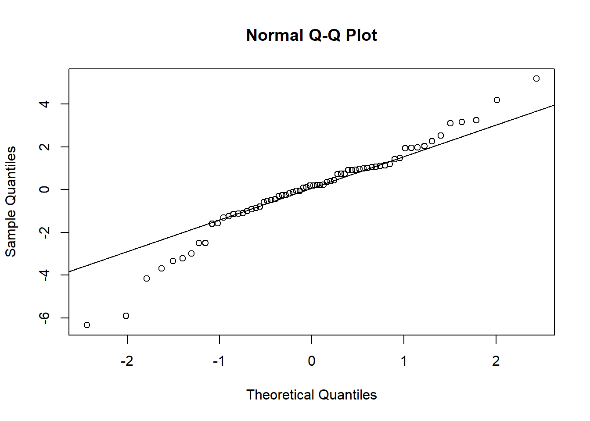
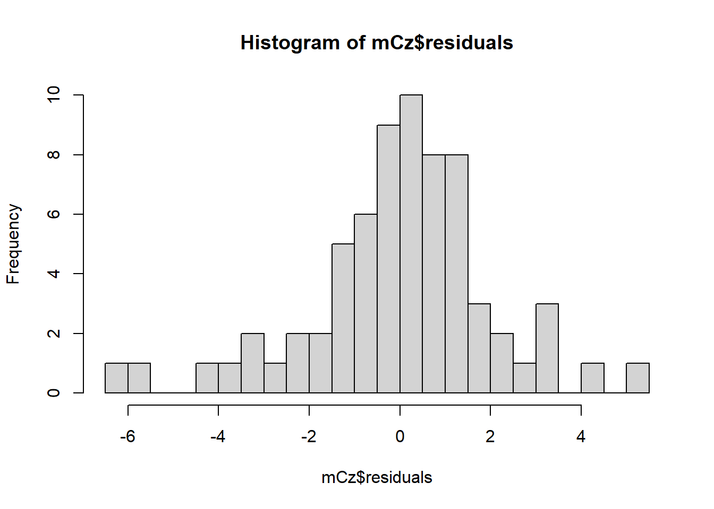
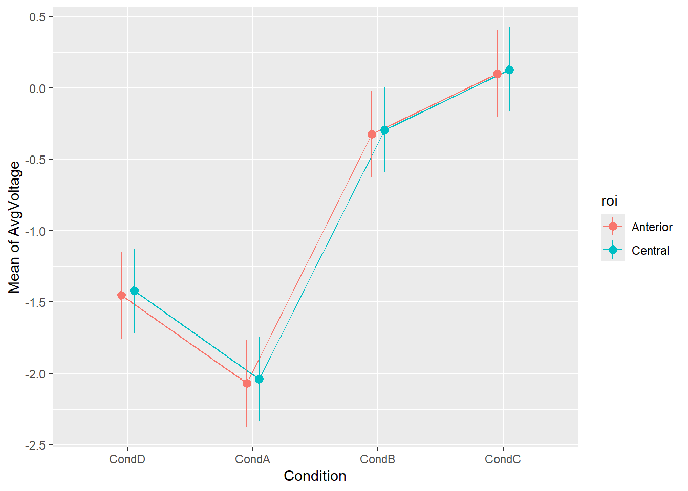

# read data
eegData<-readRDS('./data/eegSampleData.Rda')Assignment #5 - An EEG Processing Pipeline - Answer Key
In this assignment we intended to emulate a full EEG data processing pipeline using the concepts introduced across the different workgroups.
We load the required packages
Task #1: Read dataframe
For the assignment we use a large file containing real EEG data from 17 subjects collected across 4 experimental conditions.
The data is contained in the file /data/eegSampleData.Rda .
Load the data into the environment using readRDS()
The data file contains the following columns:
time: numerical time vector in seconds of the collected data with respect to the visual trigger, ranging from -0.2 (200ms before the trigger) to 0.8 (800 ms after the trigger)
Subject: Factor with 17 levels from “1” to “17” indicating the participant
Condition: categorical factor with 4 levels: “CondA”, “CondB”, “CondC” and “CondD”
Fp1 to CB2: 62 columns with voltage values measured at each electrode on the EEG collection.
Important
In the dataset uploaded in the Posit Cloud, Condition was coded as “11”, “22”,“23”,“24” instead of “CondA”, “CondB”, “CondC”, “CondD”.
If you want to replicate this assignment key, run the following line to recode the levels before continuing.
levels(eegData$Condition)<-c("CondA","CondB","CondC","CondD")Task#2: Summarize and reorganize the data
We want to Evaluate the presence or absence of a N400 Event Related Potential (ERP) on the dataset. The N400 component appears in the range of 250 to 550ms after the stimulus onset, and it is considered a broad central-anterior component.
In order to do that we have to perform the following:
Calculate the average voltage in the time window 250-550ms for all Electrodes.
Select the relevant Regions of Interest:
Anterior: electrodes F1, F2, F3, F4, F5, F6, Fz
Central: electrodes C1, C2, C3, C4, C5, C6, Cz
Compare the average voltage across experimental conditions against the Control Condition, which in this case is Condition D
Task #2.1: Subset data
Select subset of the data for the analysis:
Time in the range 0.250 to 0.550 s
Electrodes for the Anterior and Central regions defined above.
eegDataFiltered <- eegData %>%
select(time,Subject,Condition,F1,F1,F3,F4,F5,F6,Fz,C1,C2,C3,C4,C5,C6,Cz) %>%
filter(time >=0.250 & time <=0.550)
# Remove from the memory the full data set now that we have filtered the data
rm(eegData)Task #2.2: Rearrange the data from wide to long format
We convert the data from wide to long format using the steps practiced in Workgroup 2: https://lpablosrobles.github.io/Fundamentals-Linear-Models-workbook/data_organization.html
eegDataFiltered_long<-pivot_longer(eegDataFiltered,
cols = F1:Cz,
names_to = "Electrode",
values_to = "Voltage")
head(eegDataFiltered_long)# A tibble: 6 × 5
time Subject Condition Electrode Voltage
<dbl> <fct> <fct> <chr> <dbl>
1 0.250 1 CondA F1 -2.93
2 0.250 1 CondA F3 -2.90
3 0.250 1 CondA F4 -2.56
4 0.250 1 CondA F5 -2.33
5 0.250 1 CondA F6 -2.64
6 0.250 1 CondA Fz -2.54Task #2.3: Calculate data averages in the N400 window
Calculate average of data in the N400 window by averaging all points from 250 to 550 ms (already selected before).
We calculate the average in the window for each condition per subject
eegDataAveraged <- eegDataFiltered_long %>%
group_by(Subject,Condition,Electrode) %>%
summarize(AvgVoltage = mean(Voltage))`summarise()` has grouped output by 'Subject', 'Condition'. You can override
using the `.groups` argument.head(eegDataAveraged)# A tibble: 6 × 4
# Groups: Subject, Condition [1]
Subject Condition Electrode AvgVoltage
<fct> <fct> <chr> <dbl>
1 1 CondA C1 -1.79
2 1 CondA C2 -2.50
3 1 CondA C3 -1.62
4 1 CondA C4 -2.65
5 1 CondA C5 -0.884
6 1 CondA C6 -2.57 Task#3: Create a linear model of the Average Voltage
Task#3.1: Fz Electrode
Select the data in the Fz electrode
Create a model to investigate if the AverageVoltage on the Fz electrode in the N400 window is related to the Condition factor.
eegData_Fz = eegDataAveraged %>% filter(Electrode=="Fz")
mFz <- lm(AvgVoltage~Condition, data=eegData_Fz)
summary(mFz)
Call:
lm(formula = AvgVoltage ~ Condition, data = eegData_Fz)
Residuals:
Min 1Q Median 3Q Max
-6.7087 -0.7836 0.1005 1.0234 6.0605
Coefficients:
Estimate Std. Error t value Pr(>|t|)
(Intercept) -2.1692 0.5430 -3.995 0.00017 ***
ConditionCondB 1.6390 0.7679 2.135 0.03663 *
ConditionCondC 2.2767 0.7679 2.965 0.00425 **
ConditionCondD 0.8042 0.7679 1.047 0.29887
---
Signif. codes: 0 '***' 0.001 '**' 0.01 '*' 0.05 '.' 0.1 ' ' 1
Residual standard error: 2.239 on 64 degrees of freedom
Multiple R-squared: 0.1351, Adjusted R-squared: 0.09455
F-statistic: 3.332 on 3 and 64 DF, p-value: 0.02487From the results, we can infer that:
There appears to be a significant difference across conditions on the Average voltage in a window.
Condition B and C average voltages differ from the reference Condition A, however Condition D does not.
The model significance indicates that the inclusion of the Condition predictor in the model improved the explanatory power compared with an intercept only (null) model.
The exercise Task 3.3, however, asked to consider Condition D as a reference condition, while the model by default provides the results considering Condition A as the reference. To correct this, we relevel the Condition factor:
eegData_Fz <- eegData_Fz %>% mutate(Condition=relevel(Condition,"CondD"))
mFz <- lm(AvgVoltage~Condition, data=eegData_Fz)
summary(mFz)
Call:
lm(formula = AvgVoltage ~ Condition, data = eegData_Fz)
Residuals:
Min 1Q Median 3Q Max
-6.7087 -0.7836 0.1005 1.0234 6.0605
Coefficients:
Estimate Std. Error t value Pr(>|t|)
(Intercept) -1.3650 0.5430 -2.514 0.0145 *
ConditionCondA -0.8042 0.7679 -1.047 0.2989
ConditionCondB 0.8348 0.7679 1.087 0.2810
ConditionCondC 1.4725 0.7679 1.918 0.0596 .
---
Signif. codes: 0 '***' 0.001 '**' 0.01 '*' 0.05 '.' 0.1 ' ' 1
Residual standard error: 2.239 on 64 degrees of freedom
Multiple R-squared: 0.1351, Adjusted R-squared: 0.09455
F-statistic: 3.332 on 3 and 64 DF, p-value: 0.02487Now, as you can see, the coefficients changes, and there is only a very marginally significant coefficient (ConditionCondC ), indicating that no Condition is significantly different from the control D.
Marginal means calculation
Let’s look at the marginal means using the modelbased library and plot them.
emmFz <- estimate_means(mFz, by="Condition")
emmFzEstimated Marginal Means
Condition | Mean | SE | 95% CI | t(64)
-------------------------------------------------
CondD | -1.36 | 0.54 | [-2.45, -0.28] | -2.51
CondA | -2.17 | 0.54 | [-3.25, -1.08] | -4.00
CondB | -0.53 | 0.54 | [-1.61, 0.55] | -0.98
CondC | 0.11 | 0.54 | [-0.98, 1.19] | 0.20
Variable predicted: AvgVoltage
Predictors modulated: Conditionplot(emmFz) + theme_minimal()
As we can see from the marginal means and plot, it looks like Condition A and D are slightly different than condition A.
Post-hoc analysis
We understand the differences between all values, we run a post-hoc analysis with all pairwise comparisons. Let’s use for example Tukey correction (less strict than Bonferroni)
estimate_contrasts(mFz, contrast="Condition", p_adjust = "tukey", backend="emmeans")Marginal Contrasts Analysis
Level1 | Level2 | Difference | 95% CI | SE | t(64) | p
--------------------------------------------------------------------
CondA | CondB | -1.64 | [-3.66, 0.39] | 0.77 | -2.13 | 0.153
CondA | CondC | -2.28 | [-4.30, -0.25] | 0.77 | -2.96 | 0.022
CondB | CondC | -0.64 | [-2.66, 1.39] | 0.77 | -0.83 | 0.840
CondD | CondA | 0.80 | [-1.22, 2.83] | 0.77 | 1.05 | 0.722
CondD | CondB | -0.83 | [-2.86, 1.19] | 0.77 | -1.09 | 0.699
CondD | CondC | -1.47 | [-3.50, 0.55] | 0.77 | -1.92 | 0.231
Variable predicted: AvgVoltage
Predictors contrasted: Condition
p-value adjustment method: TukeyWe see a few interesting things in the output above:
- Only the contrast between condition C and Condition A seems to be significant, when applying the relevant correction for multiple comparisons. As a comparison, look at what would have been the result if the correction was not applied:
estimate_contrasts(mFz, contrast="Condition", backend="emmeans")Marginal Contrasts Analysis
Level1 | Level2 | Difference | 95% CI | SE | t(64) | p
--------------------------------------------------------------------
CondA | CondB | -1.64 | [-3.17, -0.11] | 0.77 | -2.13 | 0.037
CondA | CondC | -2.28 | [-3.81, -0.74] | 0.77 | -2.96 | 0.004
CondB | CondC | -0.64 | [-2.17, 0.90] | 0.77 | -0.83 | 0.409
CondD | CondA | 0.80 | [-0.73, 2.34] | 0.77 | 1.05 | 0.299
CondD | CondB | -0.83 | [-2.37, 0.70] | 0.77 | -1.09 | 0.281
CondD | CondC | -1.47 | [-3.01, 0.06] | 0.77 | -1.92 | 0.060
Variable predicted: AvgVoltage
Predictors contrasted: Condition
p-values are uncorrected.- In this case also the comparison between Conditions A and B is signficant, but it is likely a Type I error due to the use of multiple comparisons.
Analysis using
emmeans
Considering that the modelbased package is relatively new and the wide usage of emmeans , I include here the same calculation using emmeans for reference, as the nomenclature and output is a bit different. Remember though that modelbased is a wrapper that calls emmeans on the background.
emmFz_alt <- emmeans(mFz,~Condition)
emmFz_alt Condition emmean SE df lower.CL upper.CL
CondD -1.365 0.543 64 -2.450 -0.280
CondA -2.169 0.543 64 -3.254 -1.085
CondB -0.530 0.543 64 -1.615 0.555
CondC 0.107 0.543 64 -0.977 1.192
Confidence level used: 0.95 Using plot directly on the emmeans output produces the same plot in a different format but with the same information.
plot(emmFz_alt, horizontal = FALSE)
Finally, to perform pairwise comparisons, the same function emmeans can be used, but using the pairwise word in the formula as below:
emmeans(mFz,pairwise~Condition)$emmeans
Condition emmean SE df lower.CL upper.CL
CondD -1.365 0.543 64 -2.450 -0.280
CondA -2.169 0.543 64 -3.254 -1.085
CondB -0.530 0.543 64 -1.615 0.555
CondC 0.107 0.543 64 -0.977 1.192
Confidence level used: 0.95
$contrasts
contrast estimate SE df t.ratio p.value
CondD - CondA 0.804 0.768 64 1.047 0.7224
CondD - CondB -0.835 0.768 64 -1.087 0.6986
CondD - CondC -1.472 0.768 64 -1.918 0.2310
CondA - CondB -1.639 0.768 64 -2.135 0.1533
CondA - CondC -2.277 0.768 64 -2.965 0.0216
CondB - CondC -0.638 0.768 64 -0.830 0.8398
P value adjustment: tukey method for comparing a family of 4 estimates As you can see from the output, the function automatically applied a Tukey correction, without the need to specify it. Results are the same we obtained before
Model assumption checking
Finally, let’s check the model assumptions for validity. First on the linearity of the residuals
qqnorm(mFz$residuals)
qqline(mFz$residuals)
hist(mFz$residuals, breaks = 25)
shapiro.test(mFz$residuals)
Shapiro-Wilk normality test
data: mFz$residuals
W = 0.93818, p-value = 0.002184- The qqplot and histogram, show that the values are quite normal, however outliers are affecting the results. In the real data set, with additional subjects this will not appear, and the model will show to be valid. For the purpose of this exercise, we will report the observations.
For the homogeneity of variance we use the test that confirms the model meets the assumptions
ncvTest(mFz)Non-constant Variance Score Test
Variance formula: ~ fitted.values
Chisquare = 0.6019959, Df = 1, p = 0.43782Task#3.2: Cz Electrode
We repeat the above process for the Cz electrode:
Model fit
Select the data in the Cz electrode
Create a model to investigate if the AverageVoltage on the Fz electrode in the N400 window is related to the Condition factor.
eegData_Cz = eegDataAveraged %>% filter(Electrode=="Cz") %>% mutate(Condition=relevel(Condition,"CondD"))
mCz <- lm(AvgVoltage~Condition, data=eegData_Cz)
summary(mCz)
Call:
lm(formula = AvgVoltage ~ Condition, data = eegData_Cz)
Residuals:
Min 1Q Median 3Q Max
-6.3318 -0.9362 0.1938 1.0596 5.1886
Coefficients:
Estimate Std. Error t value Pr(>|t|)
(Intercept) -2.0151 0.5120 -3.936 0.000207 ***
ConditionCondA -0.2577 0.7241 -0.356 0.723063
ConditionCondB 1.8329 0.7241 2.531 0.013834 *
ConditionCondC 2.2794 0.7241 3.148 0.002499 **
---
Signif. codes: 0 '***' 0.001 '**' 0.01 '*' 0.05 '.' 0.1 ' ' 1
Residual standard error: 2.111 on 64 degrees of freedom
Multiple R-squared: 0.2263, Adjusted R-squared: 0.19
F-statistic: 6.239 on 3 and 64 DF, p-value: 0.0008772confint(mCz) 2.5 % 97.5 %
(Intercept) -3.0379764 -0.9921956
ConditionCondA -1.7043200 1.1888510
ConditionCondB 0.3863119 3.2794828
ConditionCondC 0.8327691 3.7259401Marginal means calculation and post-hoc analysis
emmCz <- estimate_means(mCz, by="Condition")
emmCzEstimated Marginal Means
Condition | Mean | SE | 95% CI | t(64)
-------------------------------------------------
CondD | -2.02 | 0.51 | [-3.04, -0.99] | -3.94
CondA | -2.27 | 0.51 | [-3.30, -1.25] | -4.44
CondB | -0.18 | 0.51 | [-1.21, 0.84] | -0.36
CondC | 0.26 | 0.51 | [-0.76, 1.29] | 0.52
Variable predicted: AvgVoltage
Predictors modulated: Conditionplot(emmCz) + theme_minimal()
estimate_contrasts(mCz, contrast="Condition", p_adjust = "tukey", backend="emmeans")Marginal Contrasts Analysis
Level1 | Level2 | Difference | 95% CI | SE | t(64) | p
--------------------------------------------------------------------
CondA | CondB | -2.09 | [-4.00, -0.18] | 0.72 | -2.89 | 0.027
CondA | CondC | -2.54 | [-4.45, -0.63] | 0.72 | -3.50 | 0.005
CondB | CondC | -0.45 | [-2.36, 1.46] | 0.72 | -0.62 | 0.926
CondD | CondA | 0.26 | [-1.65, 2.17] | 0.72 | 0.36 | 0.984
CondD | CondB | -1.83 | [-3.74, 0.08] | 0.72 | -2.53 | 0.065
CondD | CondC | -2.28 | [-4.19, -0.37] | 0.72 | -3.15 | 0.013
Variable predicted: AvgVoltage
Predictors contrasted: Condition
p-value adjustment method: TukeyIn this case, there are three significant comparisons: between Conditions A and B, A and C and also C and D.
Model assumptions checking
qqnorm(mCz$residuals)
qqline(mCz$residuals)
hist(mCz$residuals, breaks = 25)
shapiro.test(mCz$residuals)
Shapiro-Wilk normality test
data: mCz$residuals
W = 0.9589, p-value = 0.02476ncvTest(mCz)Non-constant Variance Score Test
Variance formula: ~ fitted.values
Chisquare = 0.000360312, Df = 1, p = 0.98486The results are similar to the Fz calculations, were the model failed on the assumption related to the normality of residuals due to a few outliers that would likely disappear when using the data of more subjects.
Task #3.3: Report the models for both Fz and Cz:
Report the results of the analysis performed in the APA format described in the lecture including if necessary any post-hoc analysis performed if needed to compare against the reference Condition D.
Warning
We saw on the output from the different comparisons that a number of them show significant differences. Which ones to report however depend on your experimental design. The assignment asked to report against a reference condition D, which would imply that the other comparisons not against D are not relevant or interpretable for the experimental manipulation.
This can often be the case in linguistics experiments, where the different conditions are to be compared to a control. Based on this assumption we write the reporting below
In an Event Related Potential (ERP) study, the effect of experimental manipulation <<<HERE THE EXPERIMENT DESCRIPTION>>> was assessed using a linear model analysis to investivate the presence of a N400 component. The analysis was performed on two sites (Electrodes Fz and Cz) on the averaged voltage in the time window [250ms, 450ms]. Three conditions (A, B, C) were compared to a a control condition D.
Linear model results showed a significant effect for Condition both in Electrode Fz (\(F(3,64)=3.33,p=.0.25,R^2_{adj}=0.09\)) and Cz (\(F(3,64)=6.24,p<.001,R^2{adj}=0.19\)).
In the Frontal region, as measured in the site Fz, the fitted model was:
\[AverageVoltage_{Fz} = -1.36 -0.80\times CondA+0.83\times CondB+1.47\times CondC\]
The model did not reveal any significant effect of Condition with respect to the reference Condition D.
Coefficient beta Confidence Interval t p Intercept (corresponding to Condition D) -1.36 [-2.45, -0.28] t(64) = -2.51 p = 0.014 Condition A -0.80 [-2.34, 0.73] t(64) = -1.05 p = 0.299 Condition B 0.83 [-0.70, 2.37] t(64) = 1.09 p = 0.281 Condition C 1.47 [-0.06, 3.01] t(64) = 1.92 p = 0.060 In the Central Region, measured at the site Cz, the fitted model was:
\[AverageVoltage_{Cz} = -2.02 -0.26\times CondA+1.83\times CondB+2.28\times CondC\]
Coefficient beta Confidence Interval t p Intercept (corresponding to Condition D) -2.02 [-3.04, -0.99] t(64) = -3.94 p<.001 Condition A -0.26 [-1.70, 1.19] t(64) = -0.36 p = 0.723 p = 0.723 Condition B 1.83 [0.39, 3.28] t(64) = 2.53 p = 0.014 Condition C 2.28 [0.83, 3.73] t(64) = 3.15 p = 0.002 Post-hoc testing based on estimation of the marginal means of the model showed a significant positive Average Voltage in Conditions C with respect to Control Condition D (\(Diff_{C-D}=2.28, 95\%CI[0.37,4.19],SE=0.72,t(64)3.15,p=0.013\)). The other two conditions showed a marginal significant positive difference in Condition B (\(Diff_{B-D}= 1.83, 95\%CI[-0.08,3.74],SE=0.72,t(64)=-2.53,p=0.065\)) and not a significant difference in Condition A (\(Diff_{A-D}= -0.26, 95\%CI[-2.17,1.65],SE=0.72,t(64)=0.36,p=0.984\)).
Pairwise post-hoc comparisons were performed using Tukey correction to account for multiple comparisons.
Model assumptions checking revealed deviations from the normality assumptions on both models that would require a more detailed look at the data outliers or likely an increase of the number of subjects in the study.
EXTRA CREDIT: Task #4 Create factor encoding Region of interest.
Task 4.1: Create new factor
Create a new variable with a factor to encode the Region of Interest called ROI based on the criteria defined above and two levels:
Anterior: electrodes F1, F2, F3, F4, F5, F6, Fz
Central: electrodes C1, C2, C3, C4, C5, C6, Cz
Tip: You can create a variable as a function of the value of another variable using case_when() . Read the following page for instructions : https://www.statology.org/conditional-mutating-r/
eegDataAveraged<- eegDataAveraged %>% mutate(Condition=relevel(Condition,"CondD"))
eegDataAveraged$roi <- case_when(
eegDataAveraged$Electrode %in% c("F1","F2","F3","F4","F5","F6","Fz") ~ "Anterior",
eegDataAveraged$Electrode %in% c("C1","C2","C3","C4","C5","C6","Cz") ~ "Central"
)
eegDataAveraged$roi<-as.factor(eegDataAveraged$roi)Task 4.2: Multiple linear regression
- Create a model to investigate if the AverageVoltage in the N400 window is related to the Condition and ROI predictors.
mCA <-lm(AvgVoltage~Condition+roi, data = eegDataAveraged)
summary(mCA)
Call:
lm(formula = AvgVoltage ~ Condition + roi, data = eegDataAveraged)
Residuals:
Min 1Q Median 3Q Max
-6.9257 -0.8371 0.0603 1.0342 6.4014
Coefficients:
Estimate Std. Error t value Pr(>|t|)
(Intercept) -1.45219 0.15511 -9.362 < 2e-16 ***
ConditionCondA -0.61770 0.19301 -3.200 0.00142 **
ConditionCondB 1.12764 0.19301 5.842 7.24e-09 ***
ConditionCondC 1.55151 0.19301 8.039 2.92e-15 ***
roiCentral 0.03094 0.13688 0.226 0.82124
---
Signif. codes: 0 '***' 0.001 '**' 0.01 '*' 0.05 '.' 0.1 ' ' 1
Residual standard error: 2.029 on 879 degrees of freedom
Multiple R-squared: 0.1548, Adjusted R-squared: 0.151
F-statistic: 40.25 on 4 and 879 DF, p-value: < 2.2e-16If we calculate the marginal means and plot we can see that there are no major differences between the two ROIs.
emm<-estimate_means(mCA,by=c("Condition","roi"))
emmEstimated Marginal Means
Condition | roi | Mean | SE | 95% CI | t(879)
-------------------------------------------------------------
CondD | Anterior | -1.45 | 0.16 | [-1.76, -1.15] | -9.36
CondA | Anterior | -2.07 | 0.16 | [-2.37, -1.77] | -13.34
CondB | Anterior | -0.32 | 0.16 | [-0.63, -0.02] | -2.09
CondC | Anterior | 0.10 | 0.16 | [-0.21, 0.40] | 0.64
CondD | Central | -1.42 | 0.15 | [-1.72, -1.13] | -9.45
CondA | Central | -2.04 | 0.15 | [-2.33, -1.74] | -13.56
CondB | Central | -0.29 | 0.15 | [-0.59, 0.00] | -1.95
CondC | Central | 0.13 | 0.15 | [-0.16, 0.43] | 0.87
Variable predicted: AvgVoltage
Predictors modulated: Condition, roiplot(emm)
estimate_contrasts(mCA, "Condition", by=c("roi"),p_adjust = "tukey",backend = "emmeans")Marginal Contrasts Analysis
Level1 | Level2 | roi | Difference | 95% CI | SE | t(879) | p
---------------------------------------------------------------------------------
CondA | CondB | Anterior | -1.75 | [-2.24, -1.25] | 0.19 | -9.04 | < .001
CondA | CondC | Anterior | -2.17 | [-2.67, -1.67] | 0.19 | -11.24 | < .001
CondB | CondC | Anterior | -0.42 | [-0.92, 0.07] | 0.19 | -2.20 | 0.125
CondD | CondA | Anterior | 0.62 | [ 0.12, 1.11] | 0.19 | 3.20 | 0.008
CondD | CondB | Anterior | -1.13 | [-1.62, -0.63] | 0.19 | -5.84 | < .001
CondD | CondC | Anterior | -1.55 | [-2.05, -1.05] | 0.19 | -8.04 | < .001
CondA | CondB | Central | -1.75 | [-2.24, -1.25] | 0.19 | -9.04 | < .001
CondA | CondC | Central | -2.17 | [-2.67, -1.67] | 0.19 | -11.24 | < .001
CondB | CondC | Central | -0.42 | [-0.92, 0.07] | 0.19 | -2.20 | 0.125
CondD | CondA | Central | 0.62 | [ 0.12, 1.11] | 0.19 | 3.20 | 0.008
CondD | CondB | Central | -1.13 | [-1.62, -0.63] | 0.19 | -5.84 | < .001
CondD | CondC | Central | -1.55 | [-2.05, -1.05] | 0.19 | -8.04 | < .001
Variable predicted: AvgVoltage
Predictors contrasted: Condition
p-value adjustment method: TukeyWhat you can see from the results and the graphs is that the marginal means show difference between conditions, but same behavior is observed across Regions of Interest, without particular differences between Anterior and Central regions.
However, you can see that a number of comparisons that were not significant before are now that we have included more data (more sites). We can compare model with and without a parameter.
Please note that a model with only the Region of Interest roi does not make theoretical sense in general, as it will imply that the activity is different independently of the manipulation.
mCA_0<-lm(AvgVoltage~Condition, data=eegDataAveraged)
summary(mCA_0)
Call:
lm(formula = AvgVoltage ~ Condition, data = eegDataAveraged)
Residuals:
Min 1Q Median 3Q Max
-6.9114 -0.8330 0.0626 1.0369 6.3848
Coefficients:
Estimate Std. Error t value Pr(>|t|)
(Intercept) -1.4355 0.1364 -10.524 < 2e-16 ***
ConditionCondA -0.6177 0.1929 -3.202 0.00141 **
ConditionCondB 1.1276 0.1929 5.846 7.11e-09 ***
ConditionCondC 1.5515 0.1929 8.043 2.82e-15 ***
---
Signif. codes: 0 '***' 0.001 '**' 0.01 '*' 0.05 '.' 0.1 ' ' 1
Residual standard error: 2.028 on 880 degrees of freedom
Multiple R-squared: 0.1548, Adjusted R-squared: 0.1519
F-statistic: 53.71 on 3 and 880 DF, p-value: < 2.2e-16anova(mCA_0,mCA)Analysis of Variance Table
Model 1: AvgVoltage ~ Condition
Model 2: AvgVoltage ~ Condition + roi
Res.Df RSS Df Sum of Sq F Pr(>F)
1 880 3618.5
2 879 3618.3 1 0.21027 0.0511 0.8212As expected, the region of interest does not improve the model.
We will see that introducing an interaction between the two factors can change this interpretation after the Task#5 in Assignment #6.